Welcome To Our Municipalty
EXPLOREHistorical Background
In 1690, the town of Enrile was a virgin forest on the southernmost portion of the province of Cagayan. In 1724 or thereabouts, it was named Cabug, a barrio of Tuguegarao City and it now celebrates its feast day on August 6, later changed to August 5, in honor of its Patron Saint Nuestra Senoŕa de las Caldas. In the chronicle of Fray Julian Manumbres, Cabug as a geographical unit was officially recorded on January 20, 1849. And although the name Enrile was officially written and read in the records of the Dominicans up to 1863, the town of Enrile was still known as “Cabug”. Kalingas, the early settlers, were later joined by neighbor inhabitants in the cleaning and cultivating its rich soil. They plowed and planted the fields with staple products and tobacco. With the increasing production and number of educated elders, the Gobierno Superior proclaimed “Cabug” separated from Tuguegarao City in 1849, with a new patroness named Nuestra Senoŕa de las Nieves. This proclamed “Cabug” as “Enrile” in honor of Gobernardo General Pascual Enrile, who was responsible for the construction of Luzon’s highways. Sinupac, a hinterland of Enrile, was the hiding place of Emilio Aguinaldo and his revolutionary forces when they retreated from pursuing American forces. Today the town of Enrile not only boasts of its peaceful,orderly conditions and its competent professionals, but also of its rapidly growing hog and poultry industry.
MISSION
The Municipal Government of Enrile shall evolve into a more
cohesive,
responsive and competent work force capable of
effective and efficient
delivery of basic services to our
constituents.
VISSION
The Local Government Unit of Enrile establishes partnership with
all sectors in pursuit of accelerated socio-economic
developmentthat will uplift
the quality of life of Enrileños.
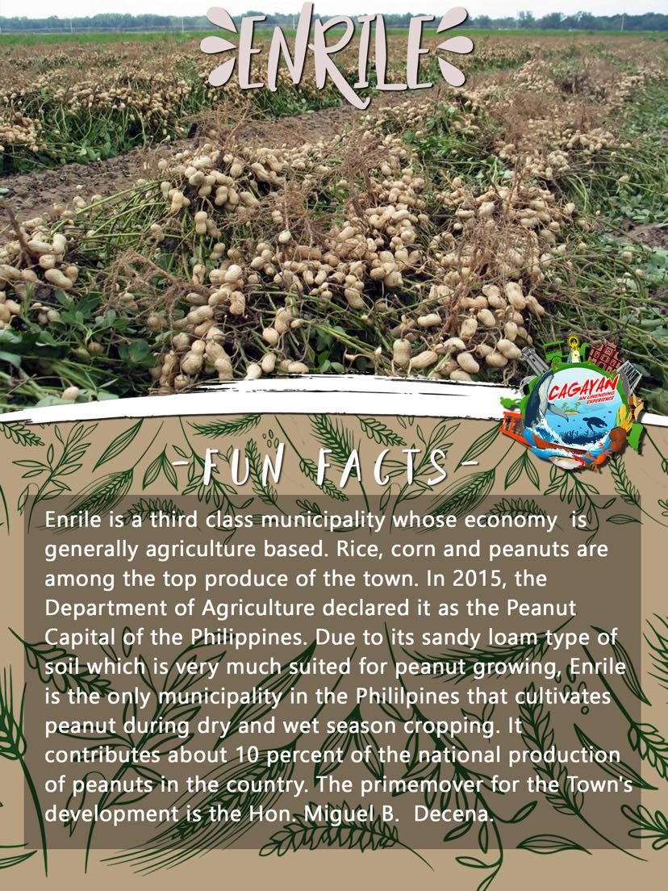
Peanut Production
The Department of Agriculture (DA) has declared the town of Enrile in
Cagayan as the "peanut capital of the Philippines" for its "noteworthy
contribution" to the development of the local peanut industry, with
experts citing the soil suitability of the town sandy to sandy-loam
and its unique ability to produce peanut year-round. One estimate of
the town's production places a volume of 1,800 metric tons per year or
8 to 10 percent of the national supply. Enrile is home to 800 peanut
farmers cultivating 700 hectares of farmlands with a potential
expansion area of another 800 hectares. "With improved production and
yield, Enrile may be able to fill up a portion, if not all, of the
import requirement for peanut of 15,060 metric tons".
The sustainability of a peanut farming community hinges on
understanding the key production players in the supply chain. This
agenda-setting paper focused on presenting and analyzing the
production and marketing experiences of 75 peanut farmers in Enrile,
Cagayan, Philippines, using the case methodology through farmer
surveys, key informant interviews, and secondary sources of
information. This paper aims to present sustainability perspectives to
revitalize peanut farming in the area and address the issues
encountered in the production and marketing of peanuts. The results of
this study showed that peanut farming in the community can be
revitalized and sustained through instituting effective flood control
measures, improving peanut farming practices, employing market-driven
strategies supported by supply chain and quality management, nurturing
the next generation of peanut farmers, and establishing better
linkages with support institutions and industry.
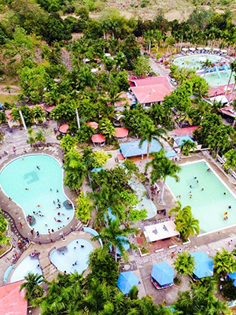
GCT FARM AND RESORT
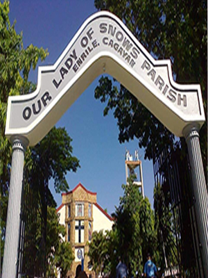
CHURCH
 Brgy Villa Maria,
Enrile, 3501 Cagayan
Brgy Villa Maria,
Enrile, 3501 Cagayan
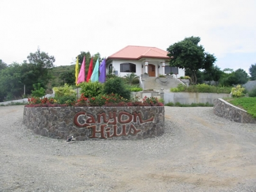
CANYON HILLS
Maddarulug Norte,
Enrile, Tuguegarao City, Cagayan
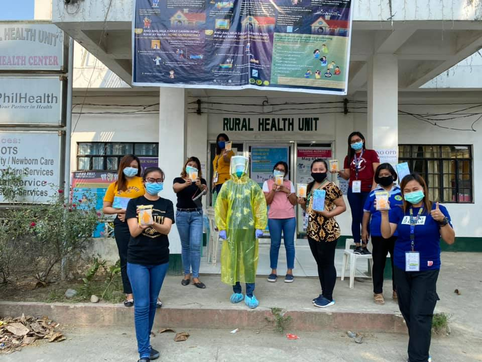
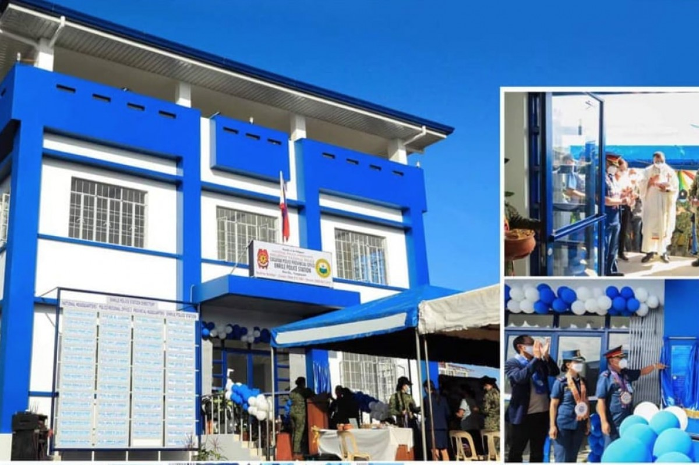
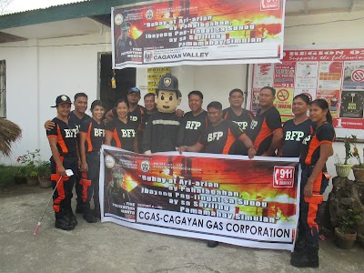
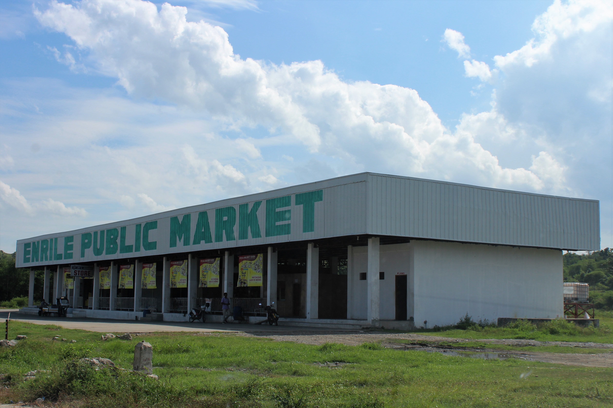
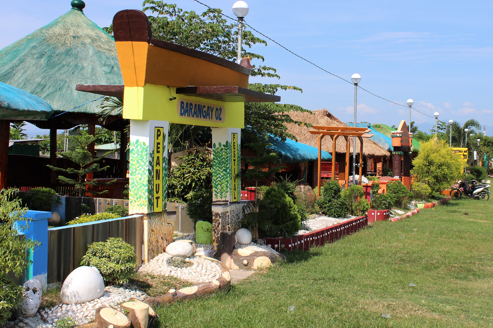
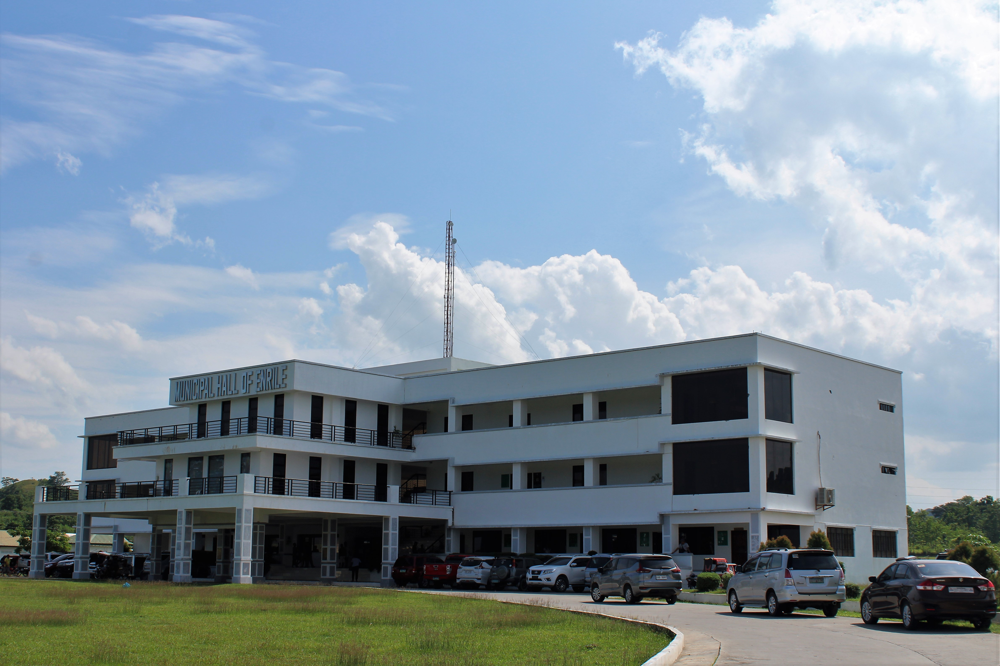
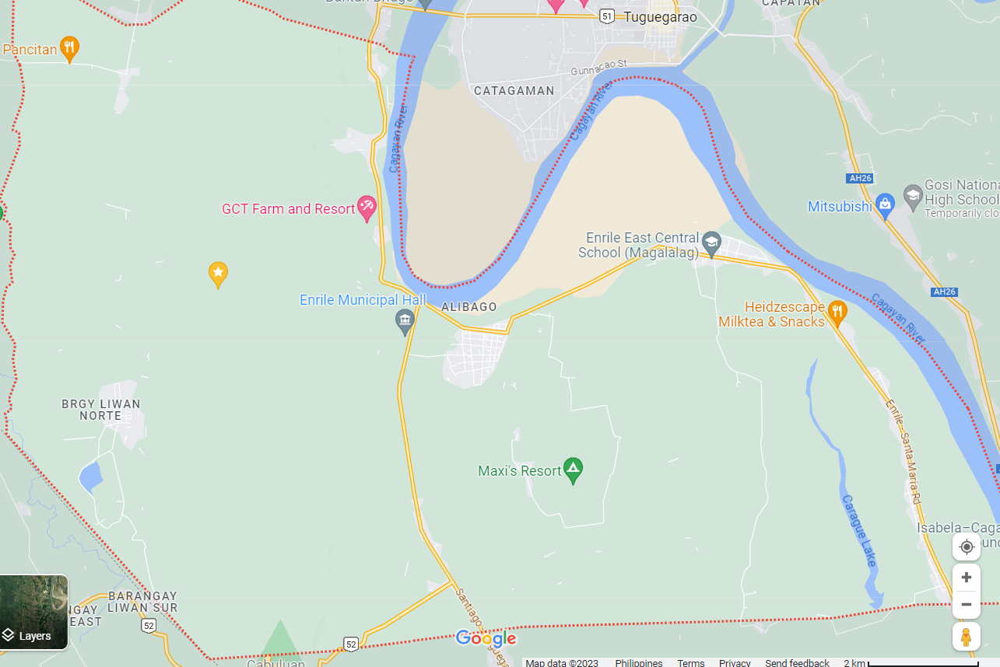